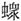

。
。春秋公羊传卷十三
文公上
文公元年
春，王正月，公即位。
三月癸亥朔，日有食之。
天王使叔服来会葬。其言来会葬何？会葬礼也。
夏四月丁巳，葬我君僖公。
天王使毛伯来锡公命。锡者何？赐也。命者何？加我服也。
晋侯伐卫。
叔孙得臣如京师。
卫人伐晋。
秋，公孙敖会晋侯于戚。
冬十月丁未，楚世子商臣弑其君髡。
公孙敖如齐。
文公二年
春，王二月甲子，晋侯及秦师战于彭衙，秦师败绩。
丁丑，作僖公主。作僖公主者何？为僖公作主也。主者曷用？虞主用桑，练主用栗。用栗者，藏主也。作僖公主何以书？ 讥。何讥尔？不时也。其不时奈何？欲久丧而后不能也。
三月乙巳，及晋处父盟。此晋阳处父也，何以不氏？讳与大夫盟也。
夏六月，公孙敖会宋公、陈侯、郑伯、晋士觳盟于垂敛。
自十有二月不雨，至于秋七月。何以书？记异也。大旱以灾书，此亦旱也，曷为以异书？大旱之日短而云灾，故以灾书。此不雨之日长而无灾，故以异书也。
八月丁卯，大事于大庙，跻僖公。大事者何？大祫也。大祫者何？合祭也。其合祭奈何？毁庙之主陈于大祖，未毁庙之主皆升，合食于大祖，五年而再殷祭。跻者何？升也。何言乎升僖公？讥。何讥尔？逆祀也。其逆祀奈何？先祢而后祖也。
冬，晋人、宋人、陈人、郑人伐秦。
公子遂如齐纳币。纳币不书，此何以书？讥。何讥尔？讥丧娶也。娶在三年之外，则何讥乎丧娶？三年之内不图婚。吉禘于庄公，讥。然则曷为不于祭焉讥？三年之恩疾矣，非虚加之也。以人心为皆有之。以人心为皆有之，则曷为独于娶焉讥？娶者大吉也，非常吉也。
其为吉者主于己，以为有人心焉者，则宜于此焉变矣。
文公三年
春，王正月，叔孙得臣会晋人、宋人、陈人、卫人、郑人伐沈。沈溃。
夏五月，王子虎卒。王子虎者何？天子之大夫也。外大夫不卒，此何以卒？新使乎我也。
秦人伐晋。
秋，楚人围江。
雨螽于宋。雨螽者何？死而坠也。何以书？记异也。外异不书，此何以书？为王者之后记异也。
冬，公如晋。十有二月己巳，公及晋侯盟。
晋阳处父帅师伐楚救江。此伐楚也，其言救江何？为谖也。其为谖奈何？伐楚为救江也。
文公四年
春，公至自晋。
夏，逆妇姜于齐。其谓之逆妇姜于齐何？略之也。高子曰：“娶乎大夫者，略之也。”
狄侵齐。
秋，楚人灭江。
晋侯伐秦。
卫侯使宁俞来聘。
冬十有一月壬寅，夫人风氏薨。
文公五年
春，王正月，王使荣叔归含且赗。含者何？口实也。其言归含且赗何？兼之，兼之非礼也。
三月辛亥，葬我小君成风。成风者何？僖公之母也。王使召伯来会葬。
夏，公孙敖如晋。葬晋襄公。
秦人入鄀。
秋，楚人灭六。
冬十月甲申，许男业卒。
文公六年
春，葬许僖公。
夏，季孙行父如陈。
秋，季孙行父如晋。
八月乙亥，晋侯讙卒。
冬十月，公子遂如晋。
晋杀其大夫阳处父。
晋狐射姑出奔狄。晋杀其大夫阳处父，则狐射姑曷为出奔？射姑杀也。射姑杀则其称国以杀何？君漏言也。其漏言奈何？君将使射姑将。阳处父谏曰：“射姑民众不说，不可使将。”于是废将。阳处父出，射姑入。君谓射姑曰：“阳处父言曰：‘射姑民众不说，不可使将。’”射姑怒，出刺阳处父于朝而走。
闰月不告月，犹朝于庙。不告月者何？不告朔也。曷为不告朔？天无是月也。闰月矣，何以谓之天无是月？非常月也。犹者何？通可以已也。
文公七年
春，公伐邾娄。
三月甲戌，取须朐。取邑不日，此何以日？内辞也，使若他人然。
遂城。
夏四月，宋公王臣卒。
宋人杀其大夫，何以不名？宋三世无大夫，三世内娶也。
戊子，晋人及秦人战于令狐。晋先昧以师奔秦。此偏战也，何以不言师败绩？敌也。此晋先昧也，其称人何？贬。曷为贬？外也。其外奈何？以师外也。何以不言出？遂在外也。
狄侵我西鄙。
秋八月，公会诸侯、晋大夫盟于扈。诸侯何以不序？大夫何以不名？公失序也。公失序奈何？诸侯不可使与公盟，眣晋大夫使与公盟也。
冬，徐伐莒。
公孙敖如莒莅盟。
文公八年
春，王正月。
夏四月。
秋八月戊申，天王崩。
冬十月壬午，公子遂会晋赵盾，盟于衡雍。乙酉，公子遂会伊雒戎盟于暴。
公孙敖如京师，不至复。丙戌，奔莒。不至复者何？不至复者，内辞也，不可使往也。不可使往则其言如京师何？遂公意也。何以不言出？遂在外也。
。
宋人杀其大夫司马。宋司城来奔。司马者何？司城者何？皆官举也。曷为皆官举？宋三世无大夫，三世内娶也。
文公九年
春，毛伯来求金。毛伯者何？天子之大夫也。何以不称使？当丧未君也。逾年矣，何以谓之未君？即位矣而未称王也。未称王何以知其即位？以诸侯之逾年即位，亦知天子之逾年即位也。以天子三年然后称王，亦知诸侯于其封内三年称子也。逾年称公矣，则曷为于其封内三年称子？缘民臣之心不可一日无君，缘终始之义，一年不二君，不可旷年无君。缘孝子之心，则三年不忍当也。毛伯来求金何以书？讥。何讥尔？王者无求，求金非礼也。然则是王者与？曰：“非也。”非王者则曷为谓之王者？王者无求，曰：“是子也。继文王之体，守文王之法度，文王之法无求而求。故讥之也。”
夫人姜氏如齐。
二月，叔孙得臣如京师。
辛丑，葬襄王。王者不书葬，此何以书？不及时书。过时书，我有往者则书。
晋人杀其大夫先都。
三月，夫人姜氏至自齐。
晋人杀其大夫士觳及箕郑父。
楚人伐郑。
公子遂会晋人、宋人、卫人、许人救郑。
夏，狄侵齐。
秋八月，曹伯襄卒。
九月癸酉，地震。地震者何？动地也。何以书？记异也。
冬，楚子使椒来聘。椒者何？楚大夫也。楚无大夫？此何以书？始有大夫也。始有大夫，则何以不氏？许夷狄者不一而足也。
秦人来归僖公、成风之襚。其言僖公、成风何？兼之。兼之非礼也。曷为不言及成风？成风尊也。
葬曹共公。